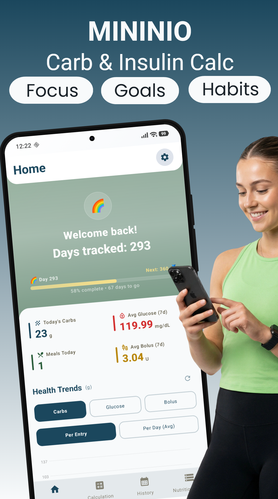
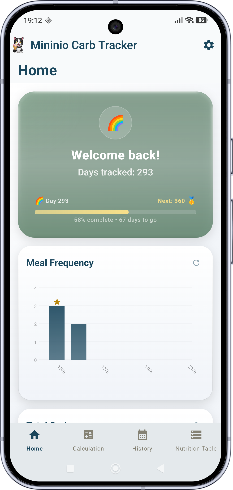
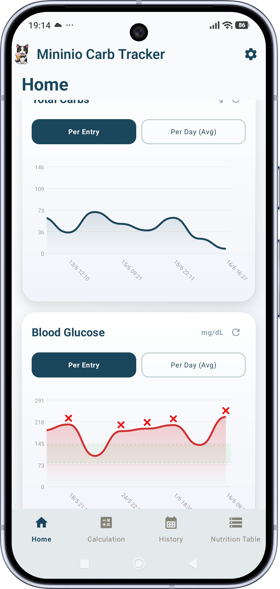
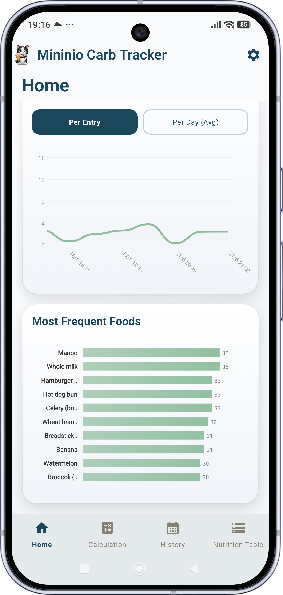
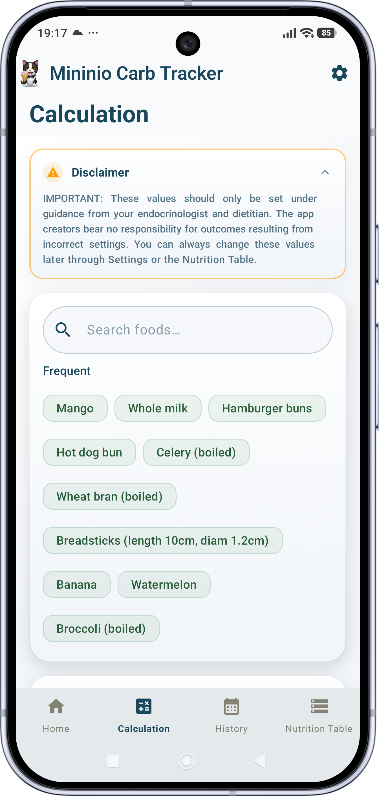
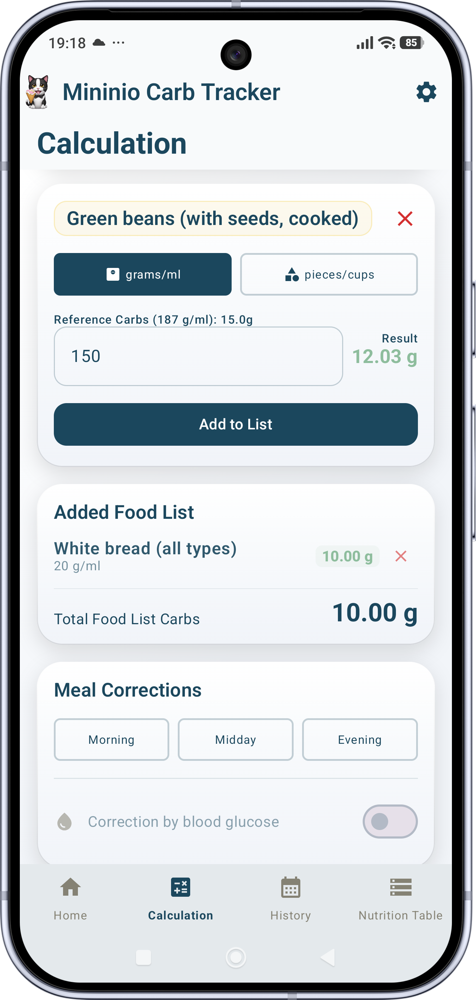
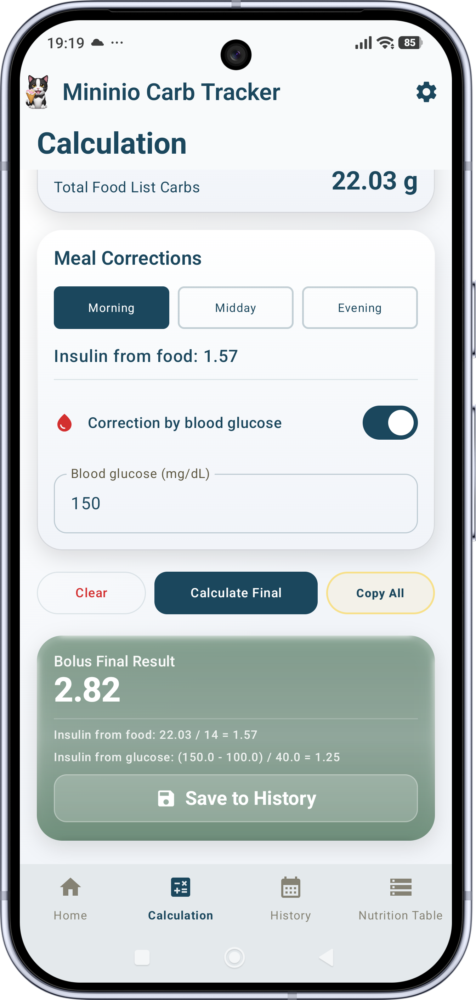

The private, offline carb calculator with custom insulin ratio math. Your data, your device, your numbers.

Mininio combines instant carb calculations, custom insulin ratio math, and a ten-language food database — all running entirely on your device, with no accounts and no cloud.
Select from 1,070 foods across 10 languages, enter your portion size, and watch the carbohydrate count update as you type.
Enter your own insulin-to-carb ratios for Morning, Midday, and Evening. The app performs the division — nothing more, nothing less.
Optionally apply your personal glucose correction formula using your own threshold, baseline, and divisor values.
30 unique milestone tiers celebrate your consistency, from Day 1 to 2000+. Tap for an interactive emoji rain reward.
Explore 5 premium charts with pinch-to-zoom, drag-to-pan, and time range filters for deep insight into your trends.
No servers, no cloud sync, no analytics, no network calls. Your eating history never leaves your device. Period.
A look inside the app's four-tab layout.






Mininio is a calculator, not a medical device. Here's exactly what it does and doesn't do.
Disclaimer: Mininio: Carb & Insulin Calc is a general wellness tool and mathematical calculator, NOT a medical device. Always consult your healthcare provider before adjusting your medication or diet.
Automatically updated on every release. Full release history on GitHub
Last updated: 16 Jun 2026
This privacy policy applies to the Mininio: Carb & Insulin Calc app for mobile devices, together with any related services operated by Konstantinos Giantsios (collectively, the “Application”). Konstantinos Giantsios is hereby referred to as the “Service Provider”.
The Application does not collect, log, or store any personal information when you download and use it. Registration is not required. If the Application is used with an active internet connection, technical protocol data (such as your ephemeral IP address) is transmitted to facilitate network connectivity, but this data is not retained or used for tracking.
This Application does not collect precise information about the location of your mobile device.
Since the Application does not collect any information, no data is shared with third parties.
Since the Application does not collect personal information through normal use, uninstalling it simply removes the Application from your device.
If you contact the Service Provider directly or voluntarily provide information by other means, you may request deletion of that information by contacting constantinos.giantsios@gmail.com.
The Application is not intended for children under 16 years of age, or such higher age as required by applicable law. The Service Provider does not knowingly solicit data from children or market to them. Since the Application does not collect personal information through normal use, children's data is not at risk from use of the Application alone.
All data stored by the Application resides exclusively on your device. The Service Provider does not have access to this data and does not transmit it over any network.
This Privacy Policy may be updated from time to time. Any changes will be posted on this page. You are advised to review this Privacy Policy periodically for any changes.
By using the Application, you consent to the terms outlined in this Privacy Policy.
If you have any questions regarding this Privacy Policy, please contact: constantinos.giantsios@gmail.com.